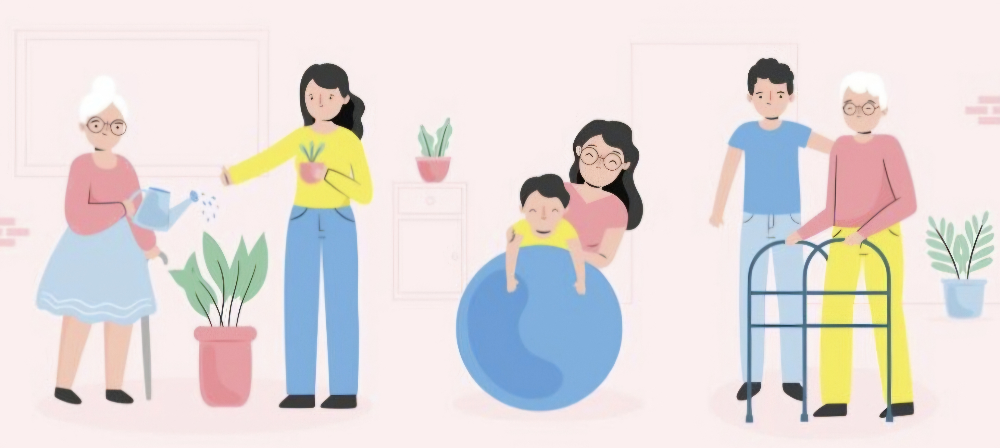
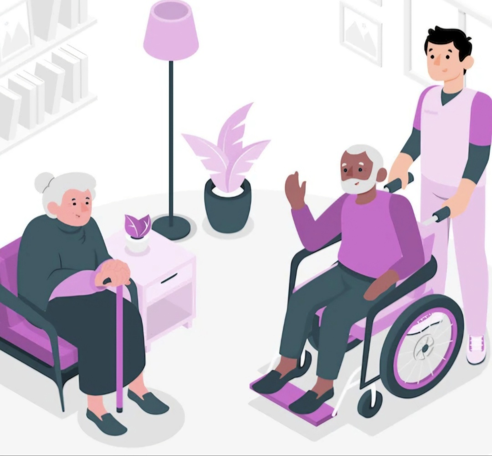
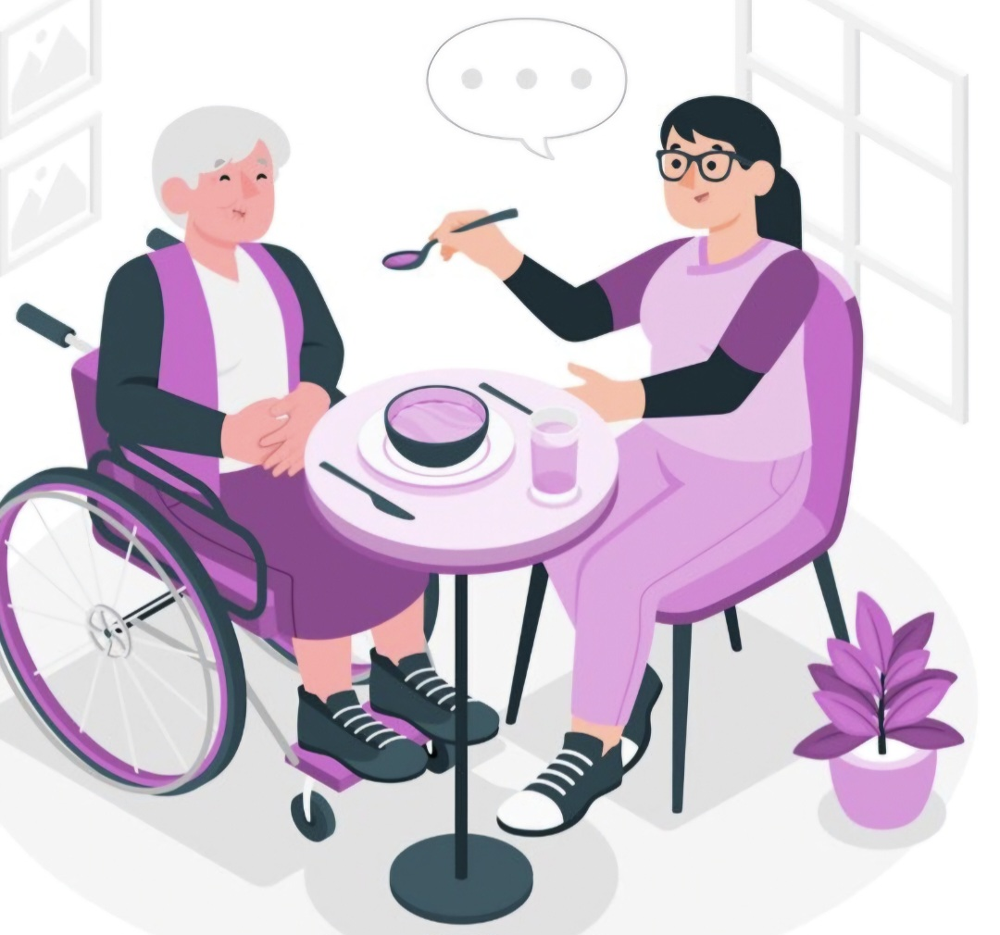
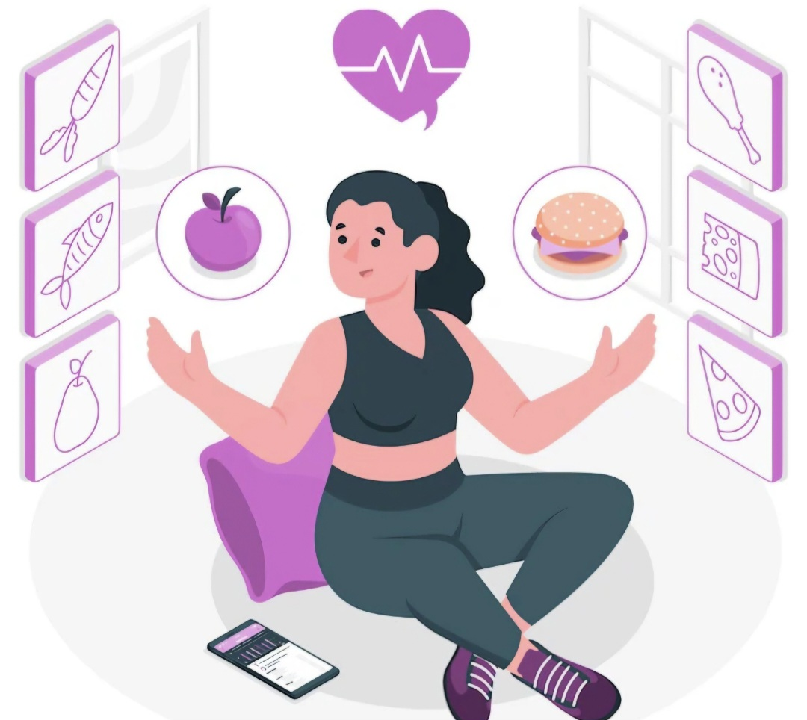
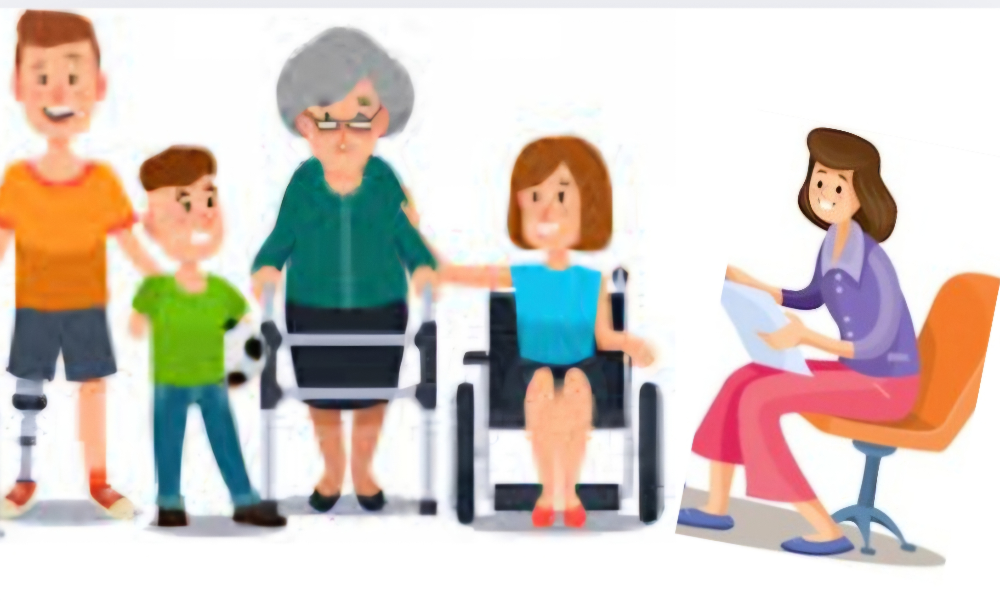
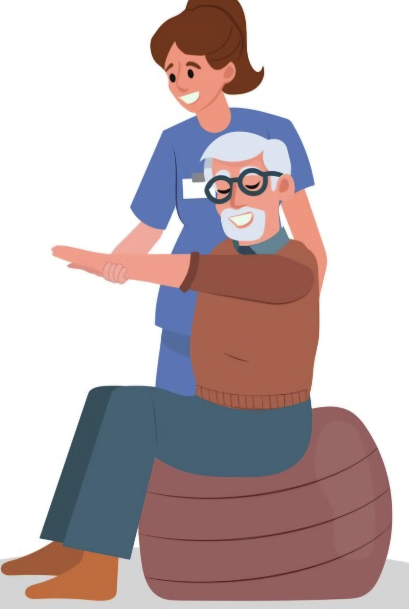
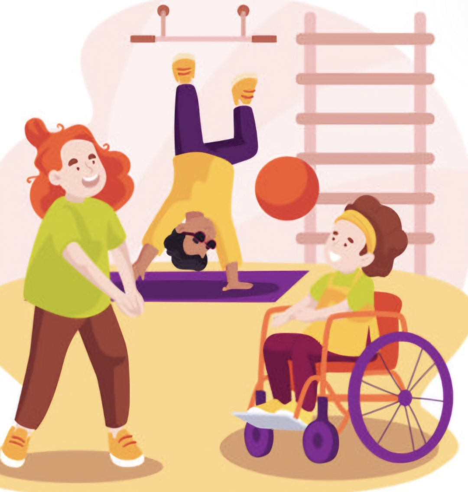
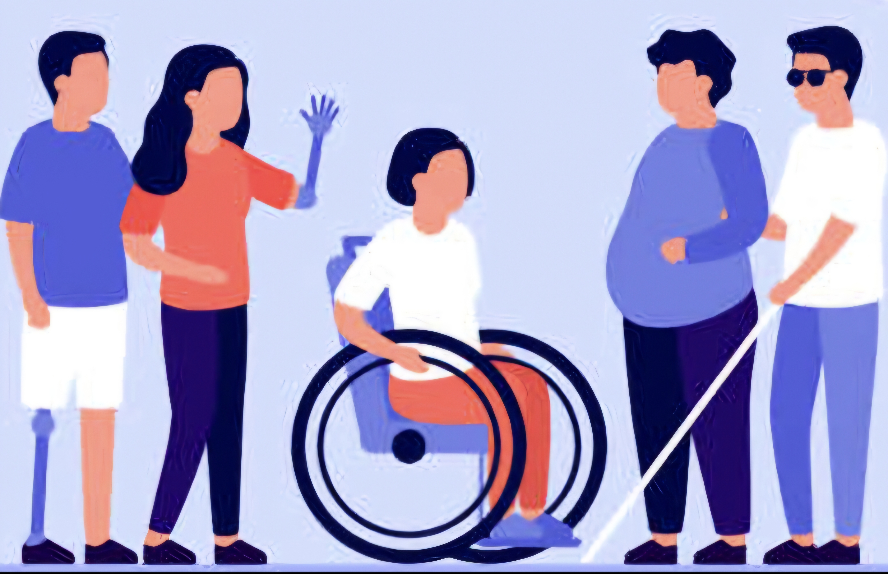

Bienvenidos
Descubre cómo un acompañante terapéutico puede transformar vidas.
Quiénes Somos
Somos profesionales dedicados a brindar apoyo a personas con diversas necesidades de salud mental, emocional o física, ayudando a mejorar su calidad de vida y promover su autonomía.
Asociados a AATRA ( "Asociación de Acompañantes Terapéuticos de la República Argentina")

Funciones del AT
¿Cómo podemos ayudarte en tu día a día?
1.Acompañamiento Psicosocial
•Asistir al paciente en su vida cotidiana, fomentando su integración social.

•Promover hábitos saludables y actividades que mejoren el bienestar emocional y físico.

•Facilitar la participación en actividades recreativas, culturales o educativas.
2.Soporte Terapéutico
•Apoyar las indicaciones de los profesionales tratantes (psicólogos, psiquiatras, médicos).
•Ser un nexo entre el paciente, la familia y el equipo terapéutico, informando sobre progresos o dificultades.

•Ayudar en la aplicación de estrategias para manejar situaciones de estrés, ansiedad o crisis.
3. Estimulación de la Autonomía
•Fomentar la independencia en actividades como el autocuidado, la alimentación o la movilidad.

•Motivar al paciente a participar activamente en decisiones que afecten su vida diaria.
4. Intervención en Situaciones de Crisis
•Brindar contención emocional en momentos de desestabilización o conflicto.
•Asegurar un ambiente seguro para el paciente y las personas a su alrededor.
5. Acompañamiento en Espacios Externos
•Apoyar al paciente en la asistencia a citas médicas, trámites o actividades sociales.
•Promover la adaptación y manejo adecuado en entornos comunitarios.

6.Trabajo en Red
•Coordinar acciones con la familia, cuidadores y profesionales tratantes.

•Participar en reuniones interdisciplinarias para evaluar el progreso del paciente.
¿Necesita un AT?
Ámbitos de aplicación
•Salud mental (trastornos de ansiedad, depresión, esquizofrenia).
•Rehabilitación por adicciones.
•Discapacidad física o intelectual.
•Adultos mayores en situación de vulnerabilidad.